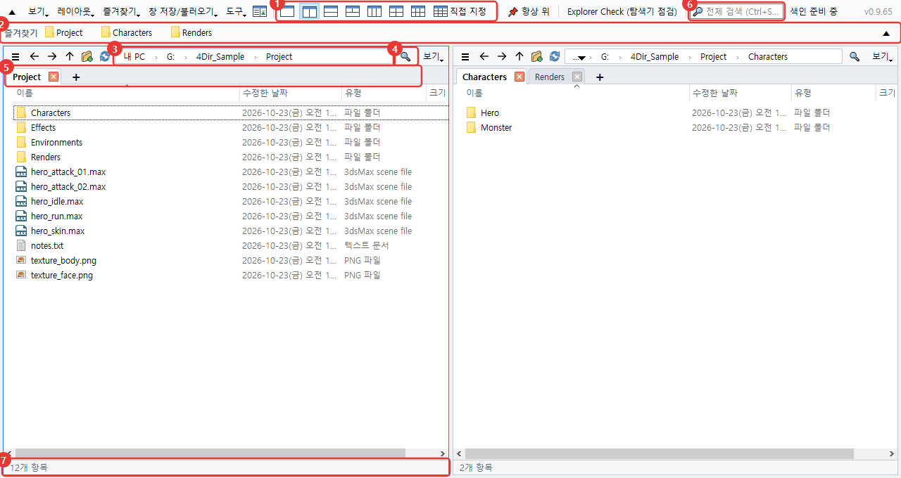
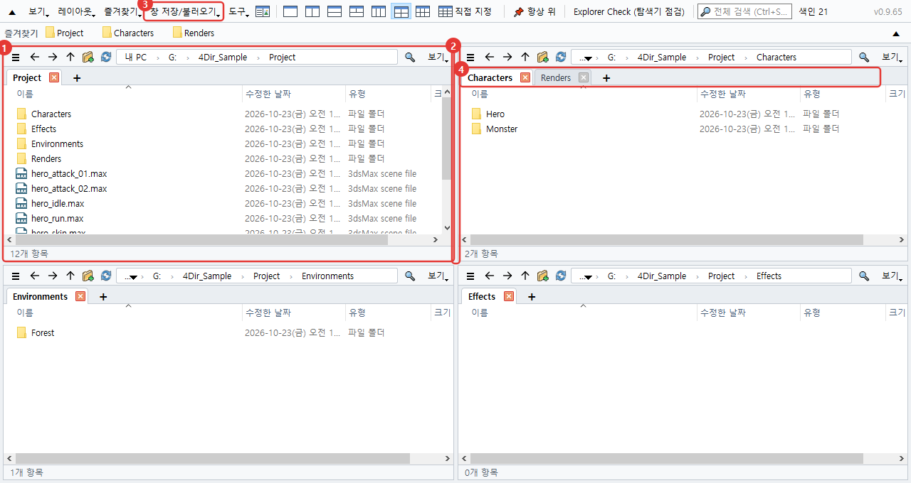
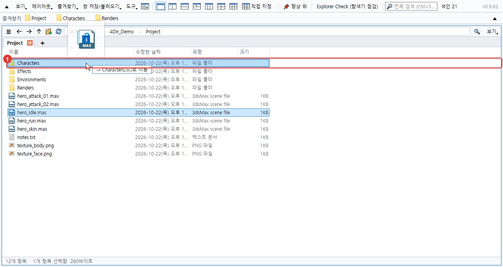
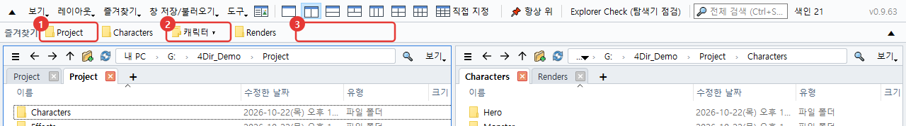
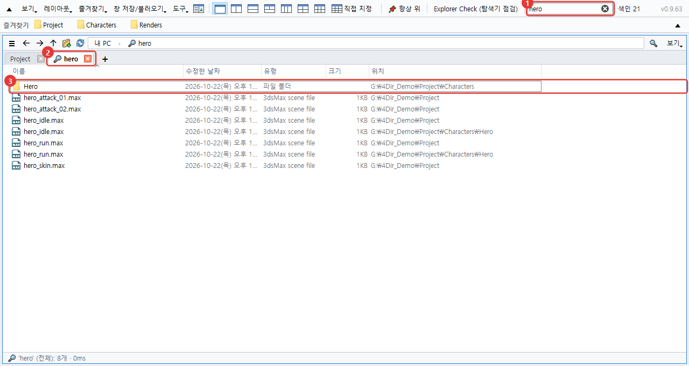
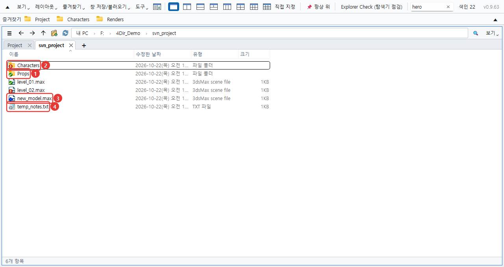
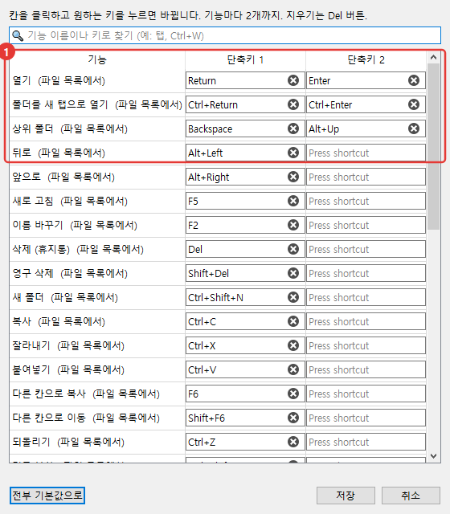
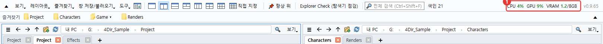
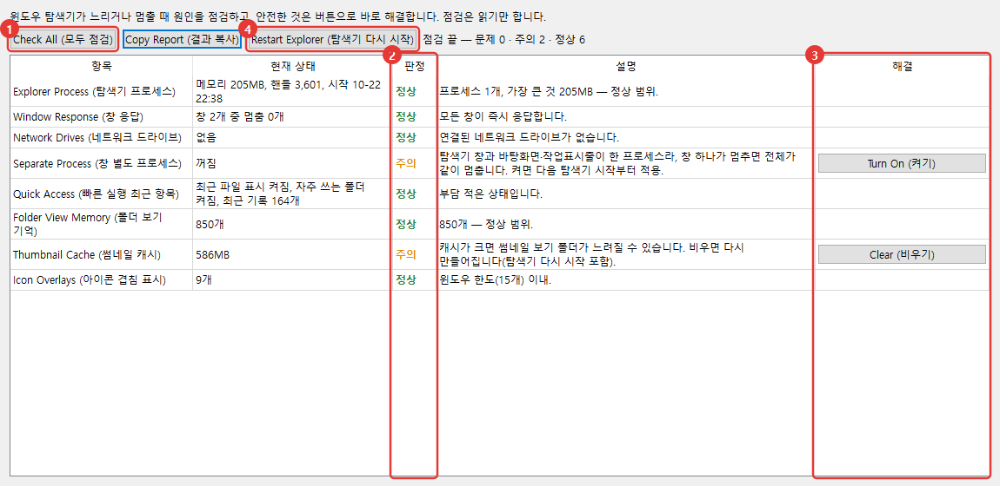

4Dir 사용법
처음 켜서 자주 쓰는 것부터 순서대로 적었습니다. 그림의 빨간 번호와 글의 번호가 같습니다. 단축키는 윈도우 탐색기와 거의 같아서, 탐색기를 쓰던 분이면 반쯤은 이미 아는 내용입니다.
화면 둘러보기
창 하나에 폴더 여러 개를 나란히 띄워 놓고 쓰는 프로그램입니다. 위에서부터 보면 이렇습니다.

- 칸 나누기 버튼. 1·2·3·4·6칸은 버튼 한 번이고, 맨 끝 직접 지정을 누르면 가로·세로 칸 수를 마음대로 정합니다(최대 5×4).
- 즐겨찾기 줄. 자주 가는 폴더를 여기로 끌어다 놓으면 버튼이 생깁니다. 버튼을 우클릭하면 이름을 바꾸거나 지울 수 있어요.
- 주소줄. 경로 조각을 누르면 그 폴더로 바로 갑니다. 오른쪽 빈 곳을 누르면 글자로 입력할 수 있게 바뀝니다.
- 필터. 지금 보고 있는 폴더 안에서 이름으로 거릅니다. Ctrl+F
- 탭. 칸마다 탭이 따로 있습니다. + 또는 Ctrl+T로 열고 Ctrl+W로 닫습니다.
- 전체 검색. 드라이브 전체에서 파일 이름을 찾습니다. 아래 '찾기'에서 따로 설명합니다.
- 상태줄. 항목 수, 고른 개수와 크기가 나옵니다.
칸과 탭 쓰기
칸 하나하나가 작은 탐색기라고 보면 됩니다. 칸마다 자기 탭과 폴더를 따로 기억합니다.

- 마지막으로 누른 칸에 파란 테두리가 생깁니다. 단축키는 이 칸에 먹습니다.
- 칸 사이 경계를 끌면 크기가 바뀝니다.
- 창 저장/불러오기에서 지금 칸 배치와 탭을 이름 붙여 저장해 둘 수 있습니다. 작업마다 하나씩 만들어 두면 편합니다.
- 탭은 끌어서 순서를 바꾸거나 다른 칸으로 옮길 수 있고, 창 밖에 놓으면 새 창으로 떨어집니다. 우클릭하면 윈도우 탐색기로 열기도 있어요.
4Dir를 끄고 다시 켜면 마지막 칸 배치와 탭이 그대로 돌아옵니다. 켜 둔 채로 PC를 재부팅해도 다음 로그인 때 다시 열립니다(도구 메뉴에서 끌 수 있음).
파일 옮기기·복사
탐색기에서 하던 대로 하면 됩니다. 끌어다 놓으면 놓일 폴더가 진하게 표시되고, 옆에 '→ ○○(으)로 이동'처럼 무엇이 일어날지 미리 보여 줍니다.

- 놓을 폴더. 같은 드라이브면 이동, 다른 드라이브면 복사입니다. Ctrl을 누르고 놓으면 복사, Shift는 이동.
칸이 여러 개면 끌지 않아도 됩니다. 고르고 F6를 누르면 옆 칸으로 복사, Shift+F6는 이동입니다.
실수했으면 Ctrl+Z. 이름 바꾸기, 새 폴더, 이동, 복사, 휴지통 삭제를 하나씩 되돌립니다.
F2로 이름을 고치다가 ↓를 누르면 바로 다음 파일 이름 고치기로 넘어갑니다. 파일 여러 개를 고르고 F2를 누르면 이름 일괄 변경 창이 열립니다.
우클릭 메뉴는 윈도우 메뉴를 그대로 씁니다. 압축 프로그램이나 TortoiseSVN 메뉴도 탐색기에서처럼 나옵니다.
.webp 그림을 우클릭하면 WebP 변환 → PNG로 저장 / JPG로 저장이 있습니다. 같은 폴더에 새 파일이 생기고 원본은 그대로 남습니다(필요 없으면 직접 지우세요). 여러 개를 골라도 한 번에 바뀝니다.
즐겨찾기
자주 가는 폴더를 위쪽 줄에 버튼으로 붙여 둡니다. 처음엔 비어 있고, 직접 넣은 것만 보입니다(윈도우 탐색기 즐겨찾기와 따로).

- 즐겨찾기 버튼. 누르면 지금 칸에서 그 폴더가 열립니다. 우클릭하면 새 탭에서 열기, 이름 바꾸기, 삭제가 있습니다. 파일을 버튼 위에 끌어다 놓으면 그 폴더로 옮기거나 복사합니다.
- 묶음 버튼(▾). 즐겨찾기 여러 개를 하나로 모은 것입니다. 누르면 안에 든 목록이 펼쳐집니다. 폴더를 묶음 버튼 가운데에 놓으면 그 묶음에 들어갑니다.
- 빈 곳이나 버튼 사이에 폴더를 끌어다 놓으면 그 자리에 새 버튼이 생깁니다. 버튼끼리 끌어서 순서도 바꿉니다. 지금 보고 있는 폴더는 Ctrl+D로 바로 추가됩니다.
정리할 게 많으면 즐겨찾기 → 즐겨찾기 정리를 여세요. 여러 개 한꺼번에 지우기, 순서·이름 바꾸기, 묶음 만들기, 지금은 없는 폴더 찾기가 한 창에 있습니다. 확인을 눌러야 적용됩니다.
버튼이 한 줄에 다 안 들어가면 줄 오른쪽 끝 ▼를 누르세요. 여러 줄로 펼쳐서 전부 보여 줍니다(▲는 다시 한 줄).
윈도우 탐색기에 고정해 둔 폴더를 그대로 쓰고 싶으면 즐겨찾기 → 윈도우 탐색기 즐겨찾기 가져오기. 이미 있는 것은 건너뜁니다.
찾기
위쪽 검색칸에 글자를 치면 바로 찾습니다. 처음 켤 때 드라이브의 파일 이름 목록을 한 번 만들어 두고, 그 뒤로는 바뀐 것만 따라가서 빠릅니다.

- 검색칸. 단어를 여러 개 넣으면 모두 들어간 이름만,
*.max처럼 별표도 됩니다. Ctrl+Shift+F - 결과는 돋보기 탭으로 열립니다.
- '위치' 열이 그 파일이 있는 폴더입니다. 두 번 누르면 열리고, 우클릭 → 폴더 위치 열기로 그 폴더로 갑니다.
어느 드라이브를 찾을지는 도구 → 검색 범위 설정에서 고릅니다. 네트워크 드라이브는 처음엔 꺼져 있어요.
목록을 만들기 전이나 범위 밖 폴더라면, 필터칸 옆 화살표 버튼으로 지금 폴더 아래를 바로 훑을 수 있습니다.
SVN 쓰는 분이라면
작업 폴더가 SVN이면 파일과 폴더에 상태 표시가 붙습니다. TortoiseSVN이 깔려 있으면 탐색기와 똑같은 그림을 씁니다.

- 초록 체크. 바뀐 것 없음. 폴더는 안쪽 전체를 봅니다.
- 빨간 느낌표. 수정됨. 폴더라면 안쪽 어딘가에 커밋 안 한 변경이 있다는 뜻입니다.
- 파랑 더하기. 추가 예정(아직 커밋 전).
- 회색 물음표. 버전 관리 밖 파일.
즐겨찾기 줄 버튼에도 같은 표시가 붙어서, 커밋 안 한 폴더를 위에서 바로 알 수 있습니다.
큰 작업 폴더는 처음 확인에 몇 초 걸립니다. 그동안 상태줄에 'SVN 확인 중'이 보여요. 표시가 필요 없으면 보기 → 표시 → SVN 상태 표시를 끄면 됩니다.
단축키 바꾸기
도구 → 단축키 설정에서 기능마다 원하는 키를 정합니다. 기능 하나에 키 두 개까지 넣을 수 있습니다.

- 칸을 누르고 쓰고 싶은 키를 누르면 바로 바뀝니다. 같은 키가 겹치면 알려 줍니다.
자주 쓰는 것만 추리면: Ctrl+T 새 탭, Ctrl+W 탭 닫기, Ctrl+N 새 창, Ctrl+L 주소줄, Ctrl+Shift+C 경로 복사, Alt+Enter 속성.
CPU·GPU 사용량 보기
3ds Max 렌더링이나 게임을 돌리면서 PC가 얼마나 바쁜지 보려고 넣은 기능입니다. 위쪽 줄 오른쪽에 숫자가 나옵니다.

- CPU: PC 전체 사용률. GPU: 그래픽카드 사용률. VRAM: 그래픽카드 메모리 쓴 양/전체(GB). 60%를 넘으면 주황, 85%를 넘으면 빨강으로 바뀝니다. 1.5초마다 갱신되고, 마우스를 올리면 그래픽카드 이름이 보입니다.
GPU·VRAM은 NVIDIA 그래픽카드에서만 나옵니다. 다른 그래픽카드면 CPU만 보입니다.
시스템 메모리(램) 사용량은 표시하지 않습니다. 필요하면 작업 관리자(Ctrl+Shift+Esc)를 보세요.
끄려면 보기 → CPU·GPU 사용량 표시. 창을 최소화하면 갱신도 저절로 멈춥니다. 창이 좁으면 메뉴줄 끝 » 안으로 들어갑니다.
탐색기 점검 (Explorer Check)
윈도우 탐색기가 자꾸 멈추거나 느릴 때 쓰는 도구입니다. 위쪽 줄의 Explorer Check (탐색기 점검) 또는 도구 메뉴에서 엽니다. 열면 바로 점검을 시작하고, 점검은 읽기만 해서 아무것도 바꾸지 않습니다.

- Check All (모두 점검): 다시 점검합니다. 탐색기 메모리, 창 응답, 네트워크 드라이브, 창 별도 프로세스, 최근 항목, 폴더 보기 기억, 썸네일 캐시, 겹침 아이콘 수, 최근 강제 종료 기록 등을 봅니다.
- 판정. 정상 / 주의 / 문제 / 참고. 옆 칸에 왜 그런지 적혀 있습니다.
- 해결 버튼. 고칠 수 있는 항목에만 나옵니다. 누르면 무엇을 바꾸는지 한 번 더 묻고, 지금 사용자 설정과 사용자 폴더만 건드립니다.
- Restart Explorer (탐색기 다시 시작): 탐색기가 멈췄을 때 끄고 다시 켭니다. 열어 둔 탐색기 창은 닫힙니다.
Copy Report (결과 복사)로 결과를 글자로 복사할 수 있습니다. 문제를 물어볼 때 같이 보내 주시면 원인 찾기가 빠릅니다.
그 밖에
- 밝게/어둡게 화면과 언어는 보기 메뉴에 있습니다. 언어는 다시 켜야 바뀝니다.
- 4Dir가 이상하게 굴면 도구 → 문제 보고용 로그 저장을 누르고 생긴 zip을 support@4dir.net 으로 보내 주세요. 로그를 보고 원인을 찾습니다.